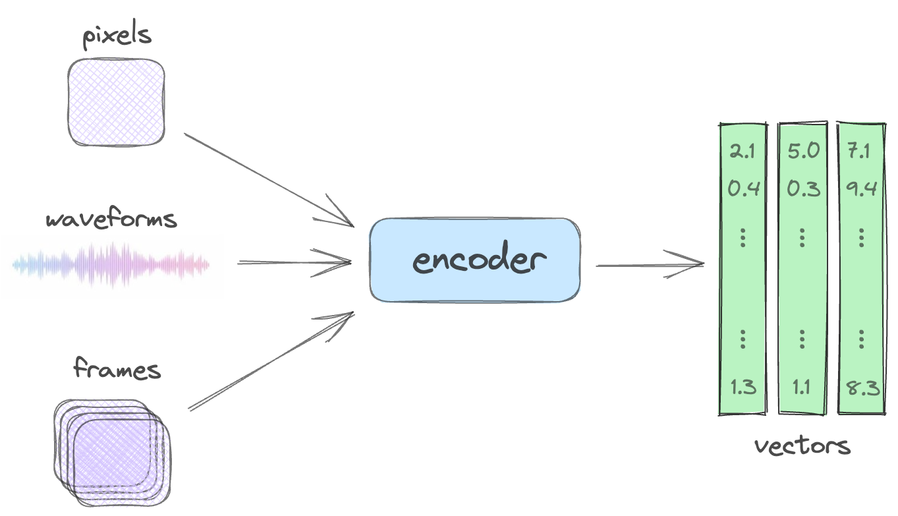
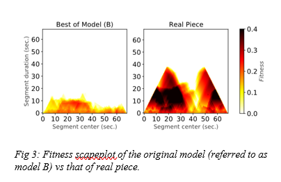

Introduction
We replicated the Transformer-XL model for jazz generation (Wu & Yang, 2020) and integrated Residual Vector Quantization (RVQ) to reduce memory and compute costs while preserving quality. This project explores the fascinating intersection of deep learning and music, specifically focusing on how we can leverage advanced models like Transformer-XL to generate jazz music. Our primary goal was to not only replicate existing work but also to enhance it by making the model more efficient.
Visual Overview

High-Level Project Overview

Fitness Scapeplot of the Replicated Model

RVQ Encoder Architecture

Fitness Scapeplot of the Original Model
Overview of our approach, combining Transformer-XL with Residual Vector Quantization (RVQ) for efficient jazz music generation.
Key Aspects of Our Work
- Transformer-XL Replication: We started by faithfully replicating the Transformer-XL model, known for its ability to capture long-range dependencies in sequential data, which is crucial for generating coherent music.
- Residual Vector Quantization (RVQ): To improve efficiency, we integrated RVQ. RVQ allows us to compress the model's representations, reducing both memory footprint and computational demands, without significantly sacrificing the quality of the generated music.
- Jazz Focus: Our model is specifically tailored for jazz music, a genre characterized by its complex harmonies, improvisation, and rhythmic nuances.
- Performance Analysis: We conducted a thorough analysis of our model's performance, comparing it to the original Transformer-XL.
Comparison of Metrics
| Metric | Recreated Model | Original Model | ||
|---|---|---|---|---|
| Loss | Loss | Loss | Loss | |
| Loss | 0.878 | 0.248 | 0.88 | 0.25 |
| H1 | 2.067 | 1.985 | 2.29 | 2.45 |
| H4 | 2.904 | 2.693 | 3.12 | 3.05 |
| GS | 0.808 | 0.767 | 0.76 | 0.69 |
| CPI | 0.759 | 0.812 | ||
| SI_short | 0.373 | 0.286 | 0.18 | 0.22 |
| SI_mid | 0.399 | 0.291 | 0.15 | 0.17 |
| SI_long | 0.366 | 0.272 | 0.11 | 0.14 |
Comparison of the metrics of the model replicated in this paper with the original.
Technical Details
The core of our approach involves replacing parts of the Transformer-XL model with an RVQ encoder. This encoder compresses the continuous representations learned by the Transformer-XL into a discrete set of vectors. By doing this, we significantly reduce the number of bits required to store and process the music data.
RVQ Encoder
- The RVQ encoder consists of multiple stages.
- Each stage quantizes the input vector into a discrete representation.
- The residuals from each stage are passed to the next stage for further quantization.
- This multi-stage quantization process allows for a finer-grained representation of the data, leading to better reconstruction quality.